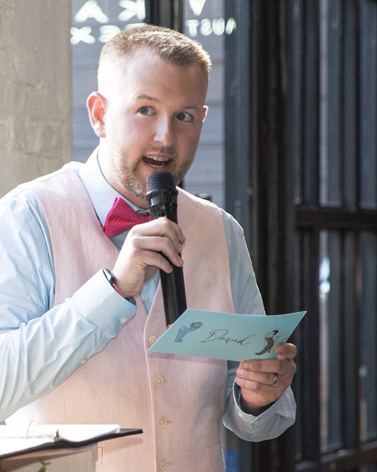

David to Yinja
When I am down, you listen. When I need help, you help. When I need opinions, you give them. When I need love, you love me. When you are feeling down, I promise to lift you back up to seize the day. When you are scared, I promise to comfort and protect you. When you need an opinion, I promise to give you honest and open thoughts.